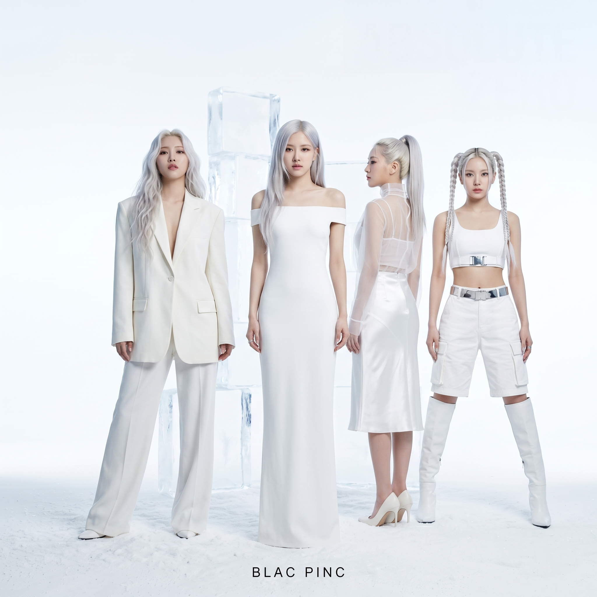
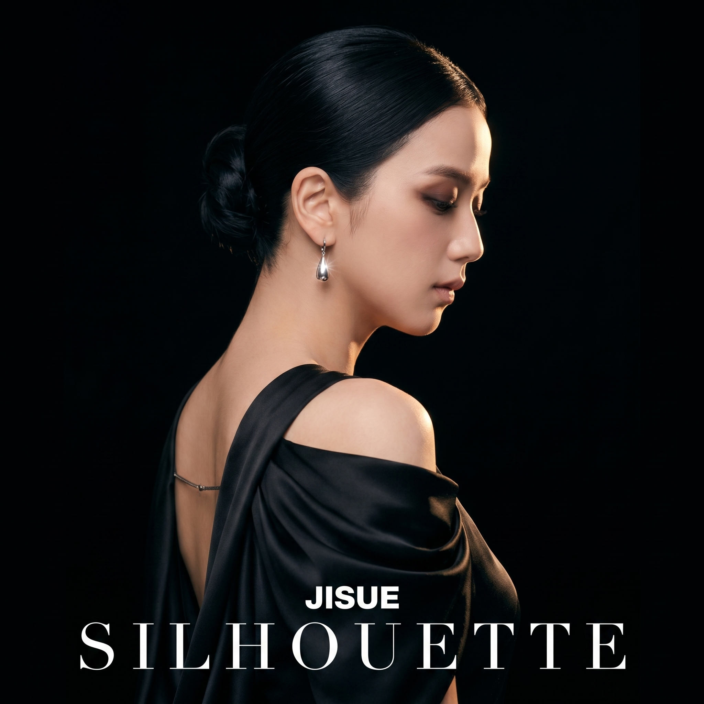
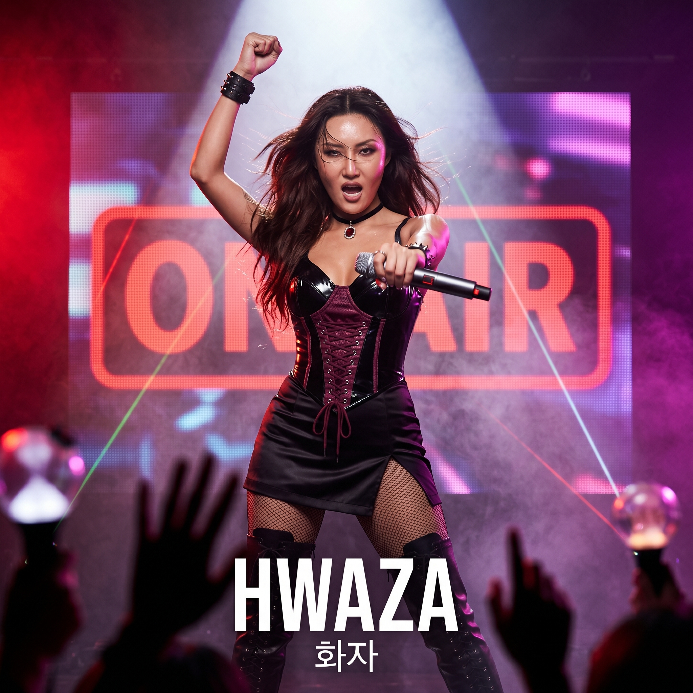
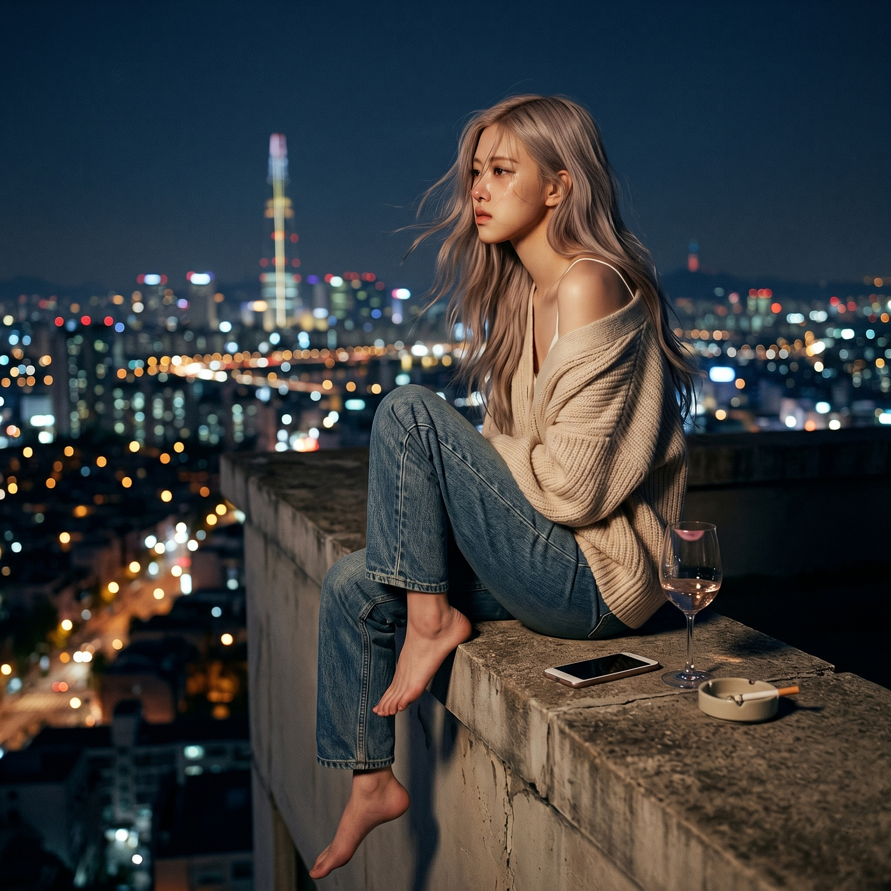
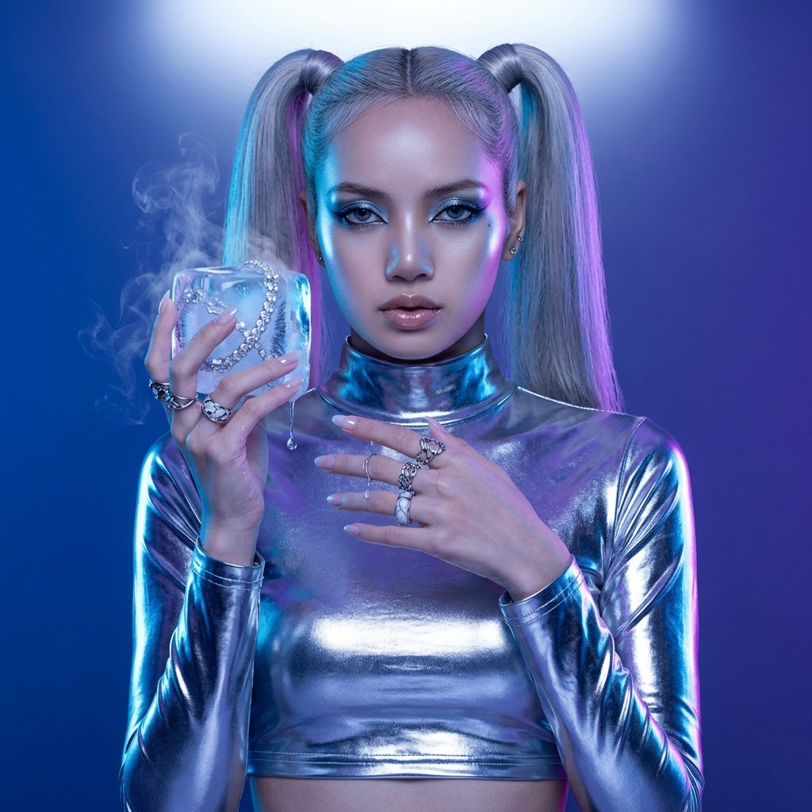
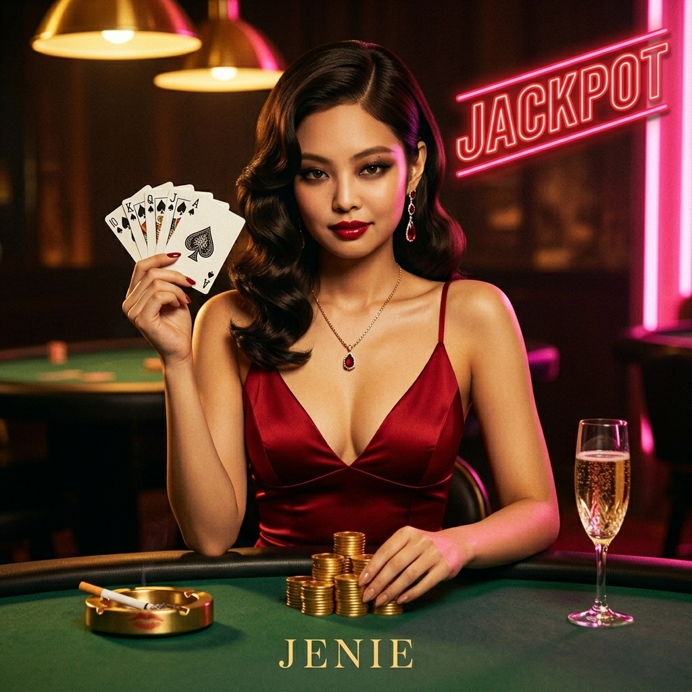

Нове — зверху. Сольники — нижче. Груповий сингл ABSOLUTE ZERO очолює 4-ту еру (дебют HWAZA, 2026.04.23). Під ним — п'ять сольних треків кожної учасниці плюс архівний JENIE · JACKPOT (2025.12). Всі треки з робочим плеєром і лірикою.

Перший і єдиний реліз нового складу після відходу JENIE. Самореферентна пісня про білу чистоту — іронічний удар по саме собі, але в Кореї іронія читається як підтвердження концепту. «I'm so pure, but I'm toxic.» White-концепт як антитеза гарячому рожевому — зимова пауза перед наступним вибухом. Дебют HWAZA на вірші.
[Verse 1 · HWAZA] 드레스가 너무 하얘서 눈이 시려 You squint, you stare, you can't see clear Sweet like almond, tastes like steel 순진한 미소는 calculated deal [Chorus · ALL] I'm so pure, but I'm toxic (Toxic, toxic) Can't look away, got you locked in 하얗게 빛나는 absolute illusion I'm so pure, freezing your confession [Bridge · HWAZA] White, pure, I am snow-white 녹아내릴 듯이 부드러운 lie 숨겨둔 까만색을 보여줄 차례야 Your turn to freeze, my turn to break

Лідерка без слів. Перший сольний реліз JISUE — кінематографічна балада з струнними і 808-ми, де вокал тримає всю вагу. Тема: лідерка як тінь — видимий силует, невидимий клинок.
[Chorus] Silhouette · 내 뒷모습만 봐 Silhouette · Dark side of the frame Silhouette · 소리 없이 움직여 Who am I? You don't know my name [Bridge] Behind every soft thing there's a sharp thing 실루엣 뒤엔 storm 부드러운 건 fake, 내 안은 — You've been warned

Перший сольний виступ HWAZA — концертний запис перед офіційним груповим дебютом. R&B-неосол з funk-басом, де вокал переходить від шепоту до soulful belt. «화자 means "the one who speaks" — and I got plenty left to say.»
[Chorus] On air · 전 세계가 내 frequency On air · 마이크가 손에 있으면 game change On air · 화자 means "the one who speaks" And I got plenty left to say [Bridge] 말을 아껴봤자 · 아무도 안 들어 So I sing the whole damn house down Hwaza, 화자, 화자 — Watch the room bow

Сольник-сповідь ROZAY. Акустична гітара, електричний злам у фінальному приспіві, вразливість з переходом у стадіонний бельт. Сеульський дах — метафора для «між пеклом і небом, нікуди не йти».
[Chorus] Rooftop · 옥상 위에서 널 잊어 Rooftop · 도시가 내 눈물을 Rooftop · Everything small from up here Except the ache · Except the ache [Bridge] 내려갈까 · Or stay up here and disappear 옥상은 천국과 지옥 사이 어디에도 못 가 · I'm just here

18 років, хардкор luxury drill. LIZAH в режимі чистого flex: 808-и, trap hi-hats, cold synth stabs. staccato з кригою у кожному слові. «Everything I touch — cold. Everything I drop — sold.»
[Chorus] Icy, icy, icy · 내 전신이 얼어 Icy, icy, icy · Hundred carats on the sleeve Icy, icy, icy · 18살에 아이스 박스 LIZAH — on freeze [Verse 3] 춤 한 번에 바꿔 판 · Street Woman Fighter, 내 이름 막내라고 쉽게 보지 마 얼음 바다에 너를 던질 거야

Останній офіційний сольник JENIE, випущений за добу до її прощального відео в Instagram. Las Vegas luxury-flex тон: Miami 808-и, вінтажний R&B-грув, sassy swagger. «I bet on me. And I won.» — фінальна рядок, яку фанати перечитують у тій самій тональності що й її прощання.
[Chorus] JACKPOT · 떴어, 떴어, 떴어 JACKPOT · 누가 나를 이겨? JACKPOT · 인생은 slot machine I'm the coin, I'm the queen [Bridge] 거울 앞에서 웃어 "How'd I get this lucky?" 답은 간단해 I bet on me. And I won.